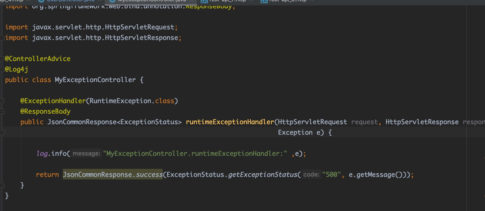

Spring全局统一异常处理
目录：
1.简介
在实际的web工程开发中，会出现各种类型的异常，通常的做法是使用try-catch将可能出现异常的代码进行处理。然而这样的缺点是，会出现大量的样版式代码，异常处理逻辑和正常业务逻辑相耦合，开发人员不仅要写业务代码，还要考虑业务中可能出现的异常。Spring统一异常处理能解决上面的问题，将正常业务逻辑和异常业务逻辑解耦。其处理方式如下：
如图所示，异常类型#1/#2/#3都是业务层可能产生的异常，这些异常经过Spring统一异常处理返回给前端相应的状态码或者Model对象。具体的异常处理逻辑在Spring统一异常处理层做，而不是耦合在业务层。
2.注册异常处理器
2.1 Controller

2.2 ExceptionHandler

ExceptionHandler处理NullPointerException，并且向前端返回状态码
注意：@ControllerAdvice , @ExceptionHandler